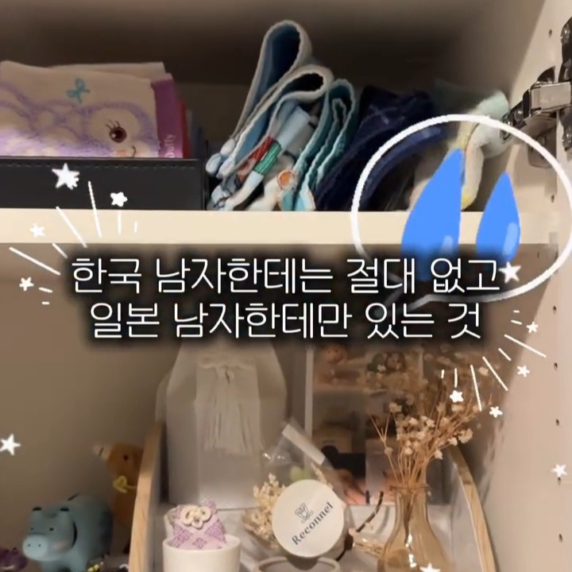
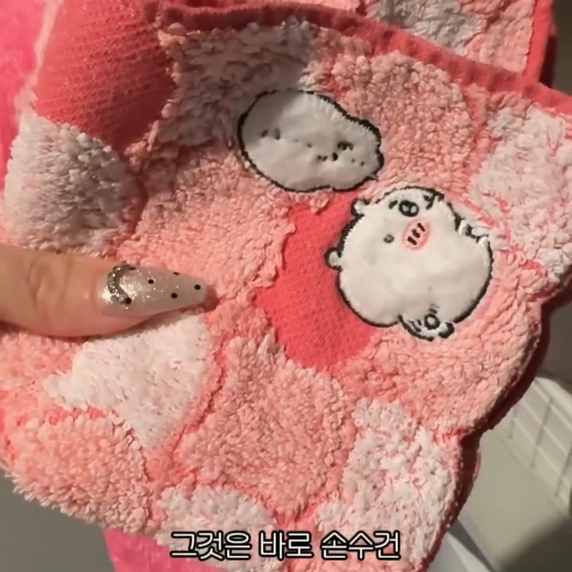
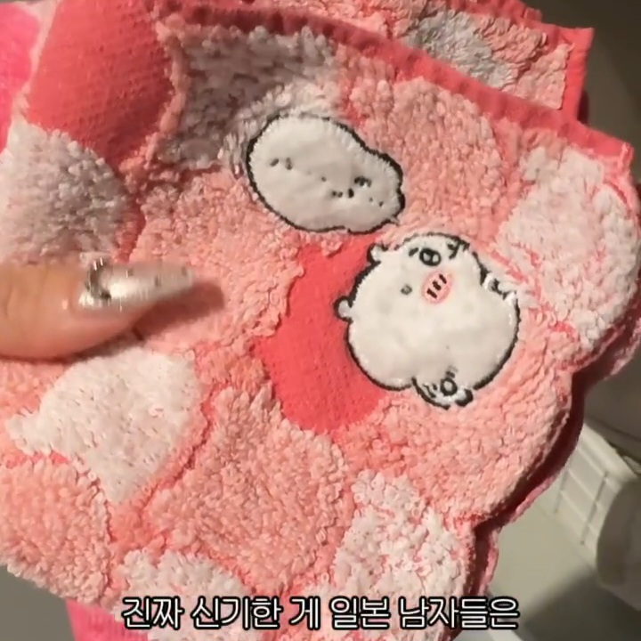
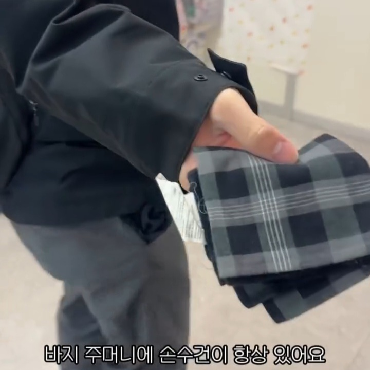
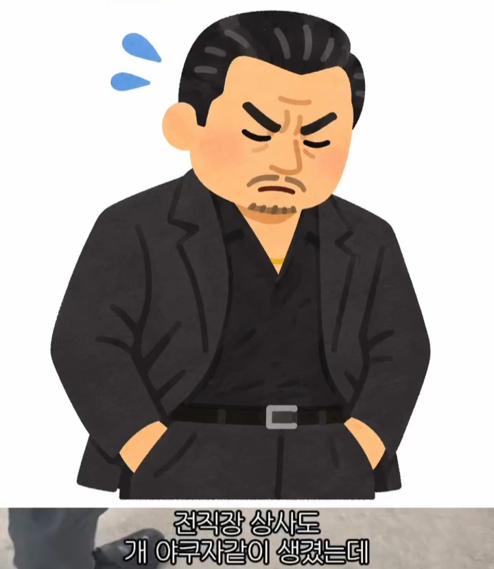
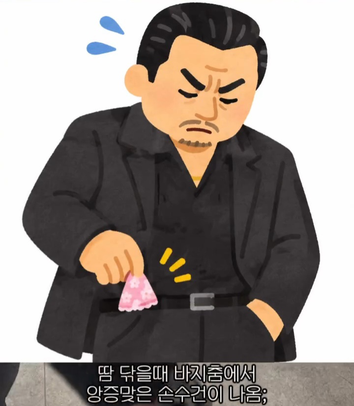
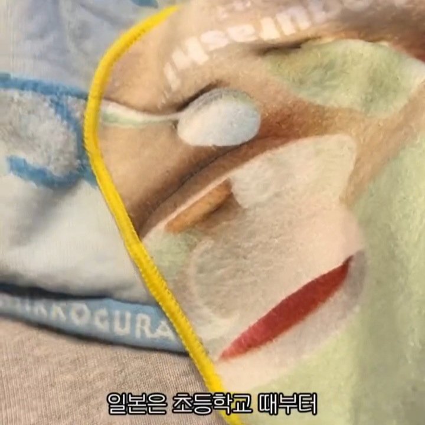
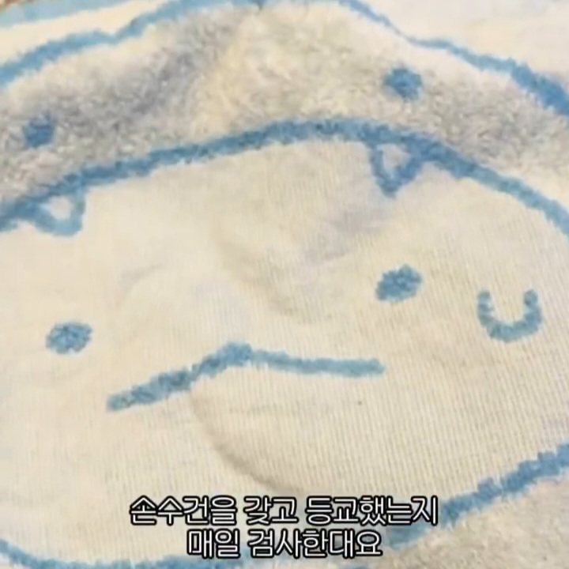
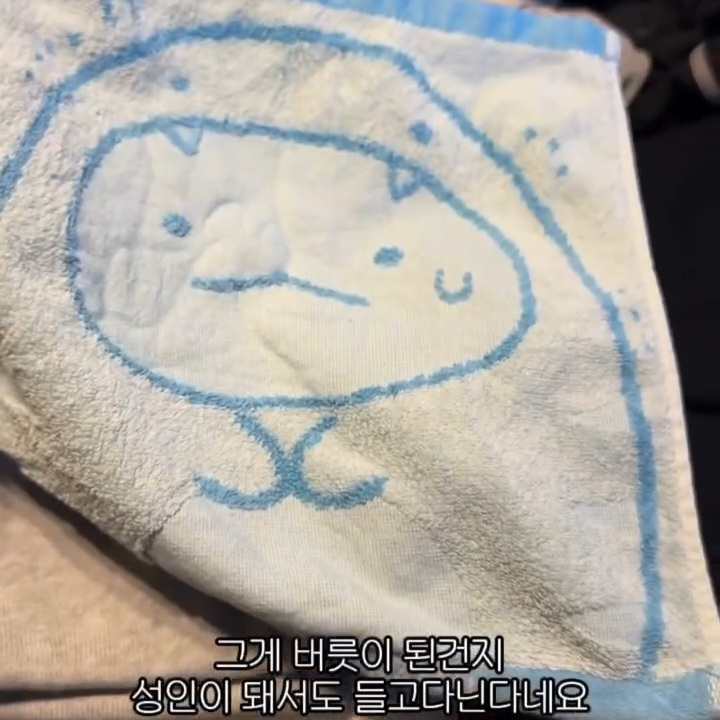
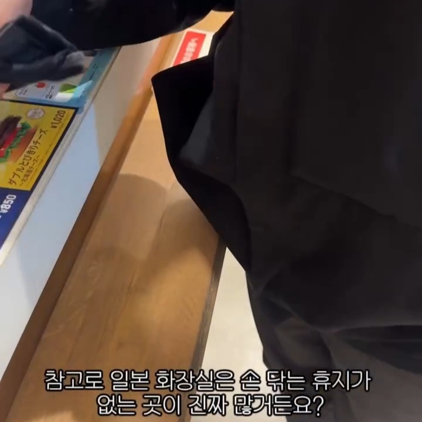
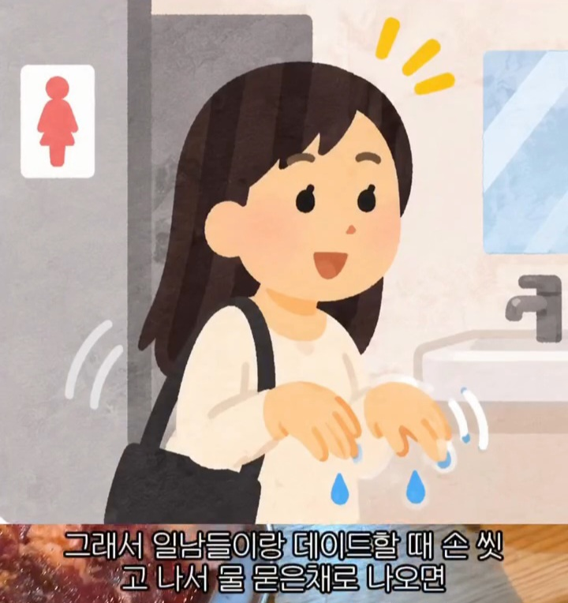
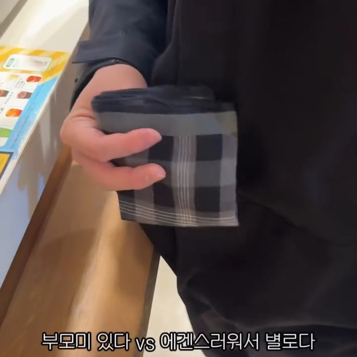
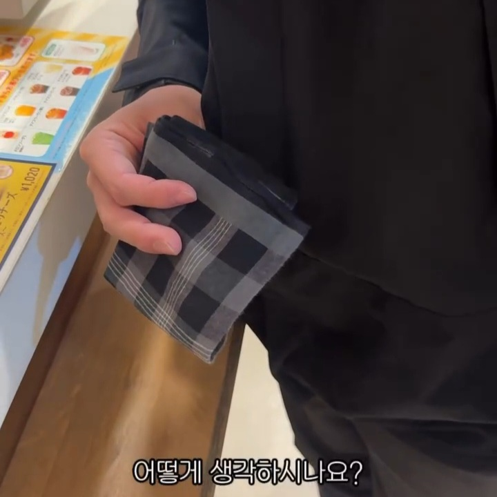
어쩐지 캐릭터샵 가면 손수건을 많이 팔고있길래 문화 차이였구나













어쩐지 캐릭터샵 가면 손수건을 많이 팔고있길래 문화 차이였구나
댓글
수집 당시 댓글 333개
ㅇㅇ · 11.12 22:24:38
러키 · 11.12 22:25:44
· ㅇㅇ · 11.13 01:22:23
· 러키 · 11.13 10:31:11
· 러키 · 11.13 10:34:30
ㅇㅇ · 11.12 22:27:25
러키 · 11.12 22:27:42
ㅇㅇ · 11.12 22:37:23
· ㅇㅇ · 11.12 22:37:36
블갤러 · 11.12 22:44:09
ㅇㅇ · 11.12 22:44:20
· ㅇㅇ · 11.12 23:07:50
· 러키 · 11.13 10:00:26
ㅇㅇ · 11.12 22:45:08
ㅇㅇ · 11.12 22:47:23
ㅇㅇ · 11.12 22:52:26
ㅇㅇ · 11.12 22:53:20
ㅇㅇ · 11.12 22:54:36
Advil · 11.12 22:55:55
ㅇㅇ · 11.12 22:57:48
ㅇㅇ · 11.12 22:59:55
· ㅇㅇ · 11.13 01:24:09
ㅇㅇ · 11.12 23:00:49
· ㅇㅇ · 11.12 23:00:54
· ㅇㅇ · 11.12 23:00:59
ㅇㅇ · 11.12 23:02:14
ㅇㅇ · 11.12 23:05:30
ㅇㅇ · 11.12 23:08:40
ㅇㅇ · 11.12 23:09:00
ㅇㅇ · 11.12 23:10:53
ㅇㅇ · 11.12 23:12:07
ㅇㅇ · 11.12 23:22:44
ㅇㅇ · 11.12 23:33:31
ㅇㅇ · 11.12 23:38:01
ㅇㅇ · 11.12 23:38:08
ㅇㅇ · 11.12 23:39:32
ㅇㅇ · 11.12 23:44:44
· ㄹㅇ · 11.13 02:40:11
S＆P500 · 11.12 23:50:10
ㅇㅇ · 11.13 00:04:25
환란 전 교회 휴거 · 11.13 00:23:47
ㅇㅇ · 11.13 00:25:08
· 린잘알 · 11.13 01:30:57
ㅇㅇ · 11.13 01:04:08
원택이 · 11.13 01:04:57
방금가입함 · 11.13 01:19:47
ㅇㅇ · 11.13 01:23:30
ㅇㅇ · 11.13 01:33:28
ㅇㅇ · 11.13 01:33:40
ㅇㅇ · 11.13 01:37:43
ㅇㅇ · 11.13 01:44:12
ㅇㅇ · 11.13 01:59:05
어린이사랑 · 11.13 02:18:16
ㅇㅇ · 11.13 02:21:20
ㅇㅇ · 11.13 02:37:54
ㄹㅇ · 11.13 02:39:21
ㅇㅇ · 11.13 02:54:23
ㅋㅋ · 11.13 02:57:52
ㅇㅇ · 11.13 03:04:21
ㅇㅇ · 11.13 03:51:07
빙륜환 · 11.13 03:51:21
ㅇㅇ · 11.13 04:45:57
ㅇㅇ · 11.13 04:54:16
ㅇㅇ · 11.13 04:54:20
ㅇㅇ · 11.13 05:04:37
이응 · 11.13 05:04:51
ㅇㅇ · 11.13 05:07:41
· ㅇㅇ · 11.13 07:21:54
ㅇㅇ · 11.13 05:12:48
ㅇㅇ · 11.13 06:56:41
ㅇㅇ · 11.13 07:00:11
ㅇㅇ · 11.13 07:12:01
ㅇㅇ · 11.13 07:23:55
ㅇㅇ · 11.13 07:26:43
· ㅇㅇ · 11.13 08:57:28
ㅇㅇ · 11.13 08:03:05
ㅇㅇ · 11.13 08:23:17
네덕찡 · 11.13 08:31:01
원또 · 11.13 08:37:32
roroelss · 11.13 08:53:51
ㅇㅇ · 11.13 09:04:24
· ㅇㅇ · 11.13 14:39:26
ㅇㅇ · 11.13 09:07:53
카즈야 · 11.13 09:07:56
ㅇㅇ · 11.13 09:08:16
ㅇㅇ · 11.13 09:09:18
ㅇㅇ · 11.13 09:11:23
ㅇㅇ · 11.13 09:20:10
ㅇㅇ · 11.13 09:56:23
ㅇㅇ · 11.13 10:02:50
· 러키 · 11.13 10:43:31
ㅇㅇ · 11.13 11:33:45
ㅇㅇ · 11.13 11:37:18
ㅇㅇ · 11.13 11:45:19
엑실리아 · 11.13 12:32:44
ㅇㅇ · 11.13 12:41:55
ㅇㅇ · 11.13 14:04:13
ㅇㅇ · 11.13 14:35:12
ㅇㅇ · 11.13 14:37:50
아음속 · 11.13 15:17:28
수어지교 · 11.12 20:54:33
ㅇㅇ · 11.12 20:55:51
ㅇㅇ · 11.12 20:56:04
ㅇㅇ · 11.12 20:56:21
· ㅇㅇ · 11.12 21:00:01
· ㅇㅇ · 11.12 21:59:23
· orthodox · 11.12 22:47:18
ㅇㅇ · 11.12 20:56:53
· ㅇㅇ · 11.12 21:02:20
ㅇㅇ · 11.12 20:58:23
ㅇㅇ · 11.12 20:58:27
ㅇㅇ · 11.12 20:59:26
틀
ㅇㅇ · 11.12 20:59:29
대
· ㅇㅇ · 11.12 20:59:36
황본
Doll · 11.12 21:01:01
ㅇㅇ · 11.12 21:01:39
ㅇㅇ · 11.12 21:02:04
· ㅇㅇ · 11.12 21:04:24
· ㅇㅇ · 11.12 22:55:08
ㅇㅇ · 11.12 21:04:36
· GookAllergy · 11.12 23:05:29
· ㅇㅇ · 11.13 01:33:06
ㅇㅇ · 11.12 21:05:30
ㅇㅇ · 11.12 21:07:26
ㅇㅇ · 11.12 21:10:28
1234 · 11.12 21:10:49
익명 · 11.12 21:10:58
ㅇㅇ · 11.12 21:11:50
· ㅇㅇ · 11.12 21:25:34
ㅇㅇ · 11.12 21:12:28
진짜
상남자는
섬세한
남자
ㅇㅇ · 11.12 21:12:46
ㅇㅇ · 11.12 21:12:46
ㅇㅇ · 11.12 21:13:48
ㅇㅇ · 11.12 21:14:04
ㅇㅇ · 11.12 21:14:25
ㅇㅇ · 11.12 21:15:04
ㅇㅇ · 11.12 21:15:28
· ㅇㅇ · 11.12 22:55:49
ㅇㅇ · 11.12 21:15:37
여갤러 · 11.12 21:19:14
· ㅇㅇ · 11.12 21:25:03
ㅇㅇ · 11.12 21:23:25
ㅇㅇ · 11.12 21:24:56
· ㅇㅇ · 11.12 23:19:39
야채주스 · 11.12 21:25:01
· ㅇㅇ · 11.12 21:54:26
ㅇㅇ · 11.12 21:25:14
· ㅇㅇ · 11.12 23:21:20
ㅇㅇ · 11.12 21:25:41
· ㅇㅇ · 11.13 01:40:09
ㅇㅇ · 11.12 21:26:16
DOOM · 11.12 21:27:18
ㅇㅇ · 11.12 21:30:41
ㅇㅇ · 11.12 21:30:48
ㅇㅇ · 11.12 21:34:58
ㅇㅇ · 11.12 21:35:15
· ㅇㅇ · 11.12 22:57:32
ㅇㅇ · 11.12 21:37:01
ㅇㅇ · 11.12 21:37:38
ㅇㅇ · 11.12 21:37:45
인천왕자 · 11.12 21:39:40
· 인천왕자 · 11.12 21:39:50
ㅇㅇ · 11.12 21:40:51
ㅇㅇ · 11.12 21:40:53
ㅇㅇ · 11.12 21:41:14
ㅇㅇ · 11.12 21:42:11
ㅇㅇ · 11.12 21:44:28
ㅇㅇ · 11.12 21:45:35
· ㅇㅇ · 11.12 22:00:50
· ㅇㅇ · 11.12 23:28:29
ㅇㅇ · 11.12 21:50:21
· ㅇㅇ · 11.12 21:51:11
ㅇㅇ · 11.12 21:52:17
ㅇㅇ · 11.12 21:57:23
풀러리 · 11.12 21:58:04
ㅇㅇ · 11.12 21:59:57
후진국 휴지없는나라
ㅇㅇ · 11.12 22:00:14
ㅇㅇ · 11.12 22:01:37
침울이에요 · 11.12 22:03:10
ㅇㅇ · 11.12 22:07:31
ㅇㅇ · 11.12 22:08:16
ㅇㅇ · 11.12 22:09:16
ㅇㅇ · 11.12 22:09:18
· 소설쟁이 · 11.12 22:23:12
ㅇㅇ · 11.12 22:10:57
ㅇㅇ · 11.12 22:12:02
ㅇㅇ · 11.12 22:12:42
ㅇㅇ · 11.12 22:14:49
ㅇㅇ · 11.12 22:16:40
59.21 · 11.12 22:18:18
· ㅇㅇ · 11.12 22:59:11
· ㅇㅇ · 11.12 23:07:18
· ㅇㅇ · 11.12 23:39:25
· ㅇㅇ · 11.13 10:33:59
ㅇㅇ · 11.12 22:19:43
ㅇㅇ · 11.12 22:22:29
ㅇㅇ · 11.12 22:22:40
· ㅇㅇ · 11.12 22:27:12
ㅇㅇ · 11.12 22:23:23
ㅇㅇ · 11.12 22:23:51
· ㅇㅇ · 11.13 00:11:36
· ㅇㅇ · 11.13 01:28:59
ㅇㅇ · 11.10 19:11:23
· 백석행 · 11.10 19:44:59
· ㅇㅇ · 11.10 19:51:04
· ㅇㅇ · 11.12 20:37:47
· ㅇㅇ · 11.12 20:38:43
ㅇㅇ · 11.10 19:12:29
· ㅇㅇ · 11.12 20:41:05
· つついあやめのおっと · 11.12 20:44:12
· つついあやめのおっと · 11.12 20:44:29
ㅇㅇ · 11.10 19:14:04
· ㅇㅇ · 11.10 19:55:54
ㅇㅇ · 11.10 19:15:30
· ㅇㅇ · 11.10 19:21:59
ㅇㅇ · 11.10 20:54:22
ㅇㅇ · 11.12 20:35:29
ㅇㅇ · 11.12 20:36:15
· ㅇㅇ · 11.12 20:43:30
llllllIllllll · 11.12 20:36:18
ㅇㅇ · 11.12 20:36:52
· ㅇㅇ · 11.12 20:38:13
· ㅇㅇ · 11.12 20:39:26
· ㅇㅇ · 11.12 20:41:45
· ㅇㅇ · 11.12 21:02:36
ㅇㅇ · 11.12 20:36:54
Ai안경=도전하라모든시험을합격하라.
· ㅇㅇ · 11.12 20:37:08
넌강해졌다
· ㅇㅇ · 11.12 20:37:49
인공지능의위대함을보여줘라휴먼이여
샨테 · 11.12 20:37:18
· 샨테 · 11.12 20:37:25
· ㅋㅋ · 11.12 20:40:07
· ㅇㅇ · 11.12 20:42:53
· 샨테 · 11.12 20:46:25
· pyuru · 11.12 20:54:26
증거를친일천주새끼들 · 11.12 20:37:29
ㅇㅇ · 11.12 20:37:43
ㅇㅇ · 11.12 20:37:57
ㅇㅇ · 11.12 20:38:05
· ㅇㅇ · 11.12 20:40:31
ㅇㅇ · 11.12 20:38:23
알카 · 11.12 20:38:36
헌트 · 11.12 20:38:55
ㅇㅇ · 11.12 20:39:04
오구리랑빠구리 · 11.12 20:39:17
· ㅇㅇ · 11.12 20:42:32
· ㅇㅇ · 11.12 20:42:53
· 바갤러 · 11.12 21:17:37
· ㅇㅇ · 11.12 21:42:11
ㅋㅋ · 11.12 20:39:43
· 샨테 · 11.12 20:46:10
ㅇㅇ · 11.12 20:40:03
ㅇㅇ · 11.12 20:40:06
실베도로롱 · 11.12 20:40:17
· 실베도로롱 · 11.12 20:41:16
· 실베도로롱 · 11.12 20:46:55
ㅇㅇ · 11.12 20:40:22
· ㅇㅇ · 11.12 20:41:02
ㅇㅇ · 11.12 20:40:35
ㅇㅇ · 11.12 20:40:38
게이
ㅇㅇ · 11.12 20:40:39
ㅇㅇ · 11.12 20:40:53
ㅇㅇ · 11.12 20:41:14
ㅇㅇ · 11.12 20:41:28
ㅇㅇ · 11.12 20:42:10
ㅇㅇ · 11.12 20:42:10
ㅇㅇ · 11.12 20:42:31
디오니소스 · 11.12 20:42:45
ㅇㅇ · 11.12 20:42:52
ㅇㅇ · 11.12 20:43:33
순수비난 · 11.12 20:43:36
ㅇㅇ · 11.12 20:43:50
ㅇㅇ · 11.12 20:43:59
ㅇㅇ · 11.12 20:44:30
ㅇㅇ · 11.12 20:45:03
ㅇㅇ · 11.12 20:45:06
ㅇㅇ · 11.12 20:45:19
ㅇㅇ · 11.12 20:45:54
ㅇㅇ · 11.12 20:46:49
· 211.108 · 11.12 21:54:00
ㅇㅇ · 11.12 20:46:59
· つついあやめのおっと · 11.12 20:50:39
한입만 · 11.12 20:47:08
ㅇㅇ · 11.12 20:47:24
증거를친일천주새끼들 · 11.12 20:48:22
ㅇㅇ · 11.12 20:48:29
ㅇㅇ · 11.12 20:49:50
· ㅇㅇ · 11.12 20:53:57
ㅇㅇ · 11.12 20:50:21
· つついあやめのおっと · 11.12 20:52:04
ㅇㅇ · 11.12 20:51:28
ㅇㅇ · 11.12 20:52:39
ㅇㅇ · 11.12 20:53:09
· ㅇㅇ · 11.12 20:53:20
ㅇㅇ · 11.12 20:53:22
ㅇㅇ · 11.12 20:53:34
pyuru · 11.12 20:53:34
ㅇㅇ · 11.12 20:53:45
· ㅇㅇ · 11.13 01:17:48
ㅇㅇ · 11.12 20:54:29
· ㅇㅇ · 11.12 21:25:34
ㅇㅇ · 11.10 19:07:16
· ㅇㅇ · 11.10 19:07:37
· ㅇㅇ · 11.10 19:08:55
· 똥방구 · 11.12 20:46:11
ㅇㅇ · 11.10 19:07:24
· ㅇㅇ · 11.10 19:08:12
· ㅇㅇ · 11.10 19:08:26
ㅇㅇ · 11.10 19:07:25
ㅇㅇ · 11.10 19:08:52
보라색맛홍차 · 11.10 19:09:07
ㅇㅇ · 11.10 19:10:14
· ㅇㅇ · 11.10 19:11:30
· ㅇㅇ · 11.10 19:12:20
· ㅇㅇ · 11.10 19:13:23
· ㅇㅇ · 11.10 19:16:36
· ㅇㅇ · 11.12 20:37:42
· ㅇㅇ · 11.12 20:40:09
· ㅇㅇ · 11.12 20:40:22
· ㅇㅇ · 11.12 20:41:12
· ㅇㅇ · 11.12 21:41:43
ㅇㅇ · 11.10 19:10:53
· ㅇㅇ · 11.10 19:12:14
· ㅇㅇ · 11.10 19:18:01
· ㅇㅇ · 11.10 19:26:31
· Chihuahua · 11.10 19:33:46
· ㅇㅇ · 11.10 21:53:59
· ㅇㅇ · 11.12 20:37:23
· ㅇㅇ · 11.12 20:40:42
· ㅇㅇ · 11.12 20:40:56
· ㅇㅇ · 11.12 20:43:56
· ㅇㅇ · 11.12 20:47:51
· ㅇㅇ · 11.12 20:56:06
· ㅇㅇ · 11.12 21:41:14